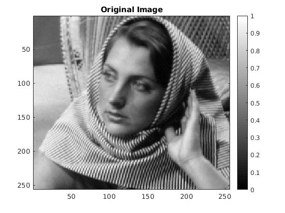
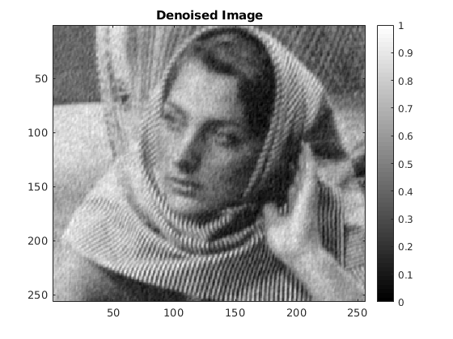
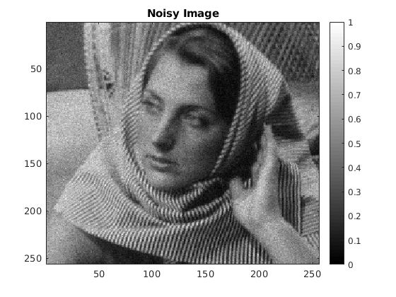
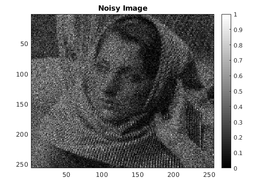

Contents
tic; clear; close all;
Assignment 5: Question 5:
This script performs the following denoising algorithms on barbara256.png : (a) myPCADenoising1 (b) myPCADenoising2 (c) myBilateralFiltering (d) myPCADenoising2 with poisson noise
a) myPCADenoising1.m
% CONSTANTS sigma = 20; PATCH_SIZE = 7; originalImage = double(imread('../data/barbara256.png')); noisyImage = originalImage + randn(size(originalImage))*sigma; [denoisedImage] = myPCADenoising1(noisyImage, sigma, PATCH_SIZE); RMSE = sqrt(sum(sum((denoisedImage - originalImage).^2))/sum(sum(originalImage.^2))); % RMSE Calculation myDisplay(originalImage, 'Original Image'); myDisplay(noisyImage, 'Noisy Image'); myDisplay(denoisedImage, 'Denoised Image'); 
RMSE Reading for myPCADenoising1
fprintf('%s%f\n\n', 'RMSE value is ', RMSE);
RMSE value is 0.072107
b) myPCADenoising2.m
% CONSTANTS sigma = 20; L = 200; PATCH_SIZE = 7; WINDOW_SIZE = 31; originalImage = double(imread('../data/barbara256.png')); noisyImage = originalImage + randn(size(originalImage))*sigma; [denoisedImage] = myPCADenoising2(noisyImage, sigma, PATCH_SIZE, WINDOW_SIZE, L); RMSE = sqrt(sum(sum((denoisedImage - originalImage).^2))/sum(sum(originalImage.^2))); myDisplay(originalImage, 'Original Image'); myDisplay(noisyImage, 'Noisy Image'); myDisplay(denoisedImage, 'Denoised Image');
RMSE Reading for myPCADenoising2
fprintf('%s%f\n\n', 'RMSE value is ', RMSE);
RMSE value is 0.057706
c) myBilateralFiltering.m
% CONSTANTS spatialSigma = 2; intensitySigma = 50; WINDOW_SIZE = 13; sigma = 20; originalImage = double(imread('../data/barbara256.png')); noisyImage = originalImage + randn(size(originalImage))*sigma; [denoisedImage] = myBilateralFiltering(noisyImage, spatialSigma, intensitySigma, WINDOW_SIZE); RMSE = sqrt(sum(sum((denoisedImage - originalImage).^2))/sum(sum(originalImage.^2))); myDisplay(originalImage, 'Original Image'); myDisplay(noisyImage, 'Noisy Image'); myDisplay(denoisedImage, 'Denoised Image');
RMSE Reading for myBilateralFiltering
fprintf('%s%f\n\n', 'RMSE value is ', RMSE);
RMSE value is 0.085867
Image filtered using Bilateral Filtering is still very noisy, and has lost the fine details of the image. The RMSE is much higher than PCA Based Approach. Global Eigenspace PCA based approach is not very good. But when we use spatially varying PCA then results are much much better than Image filtered using Bilateral Filtering.
PCA Based approach considers similar patches for denoising and does a wiener like update on eigenCoefficients whereas Bilateral Filtering uses 2 gaussian kernels (viz. spatial and intensity) for assigning weights for denoising and has no notion of similarity.
d) (i) myPCADenoising2.m with poisson noise im1 = poissrnd(im)
% CONSTANTS sigma = 1/2; L = 200; PATCH_SIZE = 7; WINDOW_SIZE = 31; originalImage = double(imread('../data/barbara256.png')); noisyImage = poissrnd(originalImage); [denoisedImage] = myPCADenoising2(sqrt(noisyImage), sigma, PATCH_SIZE, WINDOW_SIZE, L); denoisedImage = denoisedImage.*denoisedImage; RMSE = sqrt(sum(sum((denoisedImage - originalImage).^2))/sum(sum(originalImage.^2))); myDisplay(originalImage, 'Original Image'); myDisplay(noisyImage, 'Noisy Image'); myDisplay(denoisedImage, 'Denoised Image');

RMSE Reading for myPCADenoising2.m with poisson noise im1 = poissrnd(im)
fprintf('%s%f\n\n', 'RMSE value is ', RMSE);
RMSE value is 0.038085
d) (ii) myPCADenoising2.m with poisson noise im1 = poissrnd(im/20)
% CONSTANTS sigma = 1/2; L = 200; PATCH_SIZE = 7; WINDOW_SIZE = 31; originalImage = double(imread('../data/barbara256.png')); noisyImage = poissrnd(originalImage/20); [denoisedImage] = myPCADenoising2(sqrt(noisyImage), sigma, PATCH_SIZE, WINDOW_SIZE, L); denoisedImage = 20*(denoisedImage.*denoisedImage); noisyImage = 20*noisyImage; RMSE = sqrt(sum(sum((denoisedImage - originalImage).^2))/sum(sum(originalImage.^2))); myDisplay(originalImage, 'Original Image'); myDisplay(noisyImage, 'Noisy Image'); myDisplay(denoisedImage, 'Denoised Image');
RMSE Reading for myPCADenoising2.m with poisson noise im1 = poissrnd(im/20)
fprintf('%s%f\n\n', 'RMSE value is ', RMSE);
RMSE value is 0.120477
The denoised image in the latter case is still noisy and has lost the fine details of the image like the stripes in the dress of barbara. It has a much higher RMSE value as compared to former case when image wasn't divided by 20.
When we divided the image by 20 and applied poissrnd, then the amount of noise got increased in the final noisy image (after multiplying it by 20). Or we can say that the exposure time of the image was reduced which resulted in a lot more noise than the other case. Since the noise in this image is much more, we couldn't denoise it completely. Another reason is related to our assumption of Anscombe transform. This assumption is accurate only when I -> infinity but when we divided image by 20, then this assumption got worse, and the assumed Gaussian was not a good approximation. Thus, we couldn't denoise it properly.
toc;
Elapsed time is 173.369451 seconds.